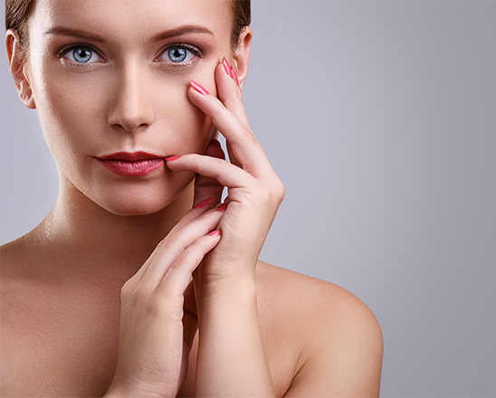

안내사항
현재 전국적으로 코로나바이러스감염증-19가 유행입니다.
더조은피부과는 전체적으로 더욱 소독과 방역을 실시하고 있습니다만, 안전을 위해 협조 부탁드립니다.



큐리언트, 아토피 치료제 후기 임상 2상 탑라인 치료효과 확인
이번 JPM 헬스케어 컨퍼런스에서 파트너링 미팅 본격 추진
큐리언트는 아토피치료제 Q301일 후기 임상 2상 탑라인 결과를 바탕으로 아토피 증상과 관련된 복수의 평가지표에서 위약군 대비 우수한 치료효과가 확인됐다고 7일 발표했습니다.
8주 투약 후 아토피 평가지표 vIGA-AD를 확인한 결과 Clear(0)와 Almost clear(1)로 개선된 환자의 비율이 위약군에서 29%인 반면 Q301 투약군에서 37%로 나타났습니다.
또 다른 아토피 평가지표인 EASI-75는 Q301 투약군에서 36%, 위약군에서 24% 성공 확률을 나타냈습니다.
가려움증평가지표인 NRS의 감소는 투약군에서 52%, 위약군에서 37%를 보였습니다. 또 모든 그룹에서 특별한 부작용이 관찰되지 않아 우수한 안전성을 확보 했다고
회사측은 설명했습니다. 회사 관계자는 “이번 탑라인 결과를 통해 대부분의 지표에서 Q301의 약효가 투여용량에 비례하는 경향을 확인했다”며 “특히 Q301의 특장점으로 기대하였던 가려움증 개선효과를 뚜렷하게 보인 것이 큰 성과다”라고 설명했습니다.
이어 “전체적인 임상 리포트가 완료되면 임상 3상을 디자인 할 수 있는 충분한 데이터를 확보할 수 있을 것으로 기대된다”고 덧붙였습니다.
주요 클리닉
더조은피부과의 주요 클리닉을 만나보세요!
피부에 유효한 성분을 진피까지 전달, 자가피부개선 능력을 활성화하여
손상된 피부 구조를 정상적으로 복원,젋고 건강한 피부로 되돌려줍니다.힐링주사
잡티, 주근깨, 여드름 자국등 칙칙한 피부를 개선하여
맑고 깨끗한 피부로 되돌려주는 차앤박피부과만의 차별화된 프로그램입니다.피부치료 프로그램
강력한 진정 보습으로 피부 컨디션을 빠르게 회복하고, 진피층을 강화하여 피부 본연의 자생력을 키우는 더조은 피부강화 프로그램을 제안합니다.
피부강화 프로그램
질풍노도를 겪는 청소년들의 또 다른 불청객 여드름!
21년의 임상경험과 노하우가 집약된 개인별 맞춤 프로그램을 안내해드립니다.청소년 여드름 치료
DRT진피재생술은 어붐야그레이저 시술과 프락셔널 레이저 시술을 결합하여 여드름 흉터를 효과적으로 개선해주는 업그레이드 시술법입니다.
DRT진피재생
여드름 치료과정중 압출로 인한 통증과 치료후 남는 자국으로 여드름 치료를 망설이는 경우가 종종 있습니다.
여드름을 방치하면 악화될 가능성이 높고, 악화된 여드름은 색소 침착이나 패인 흉터로 이어질 수 있으므로 적절한 치료가 필요합니다.아토피 치료프로그램